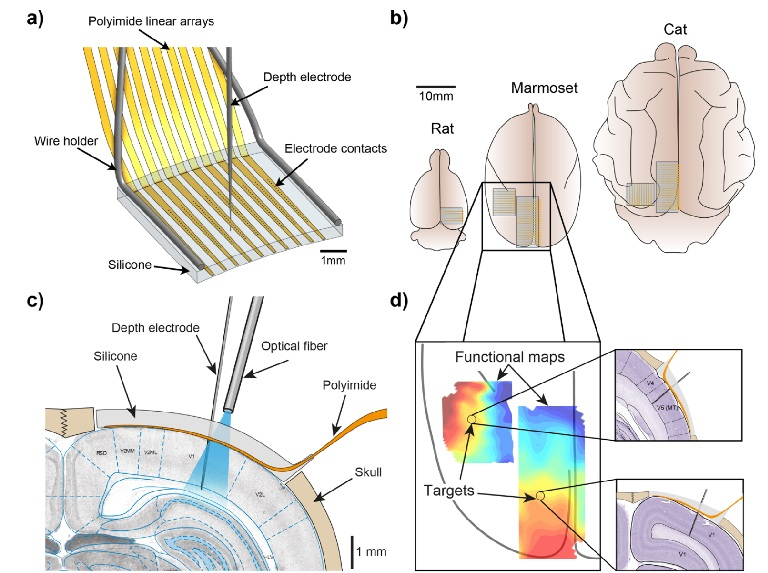
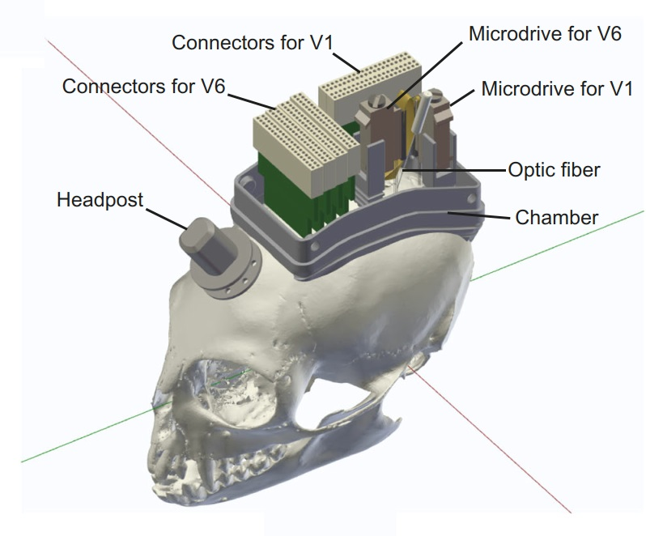

I obtained my B.S. in Biosciences from the University of Heidelberg in 2014. I then pursued a Ph.D. as part of the International Max Planck Research School for Neural Circuits at the Ernst Strüngmann Institute for Neuroscience in Frankfurt, where I conducted research on the visual cortex of marmosets using multi-area recordings and optogenetics. My current research at the Salk aims to understand how the brain integrates information about stimulus location and identity to create object representations that remain stable across eye movements.
Recent Work

A hybrid micro-ECoG for functionally targeted multi-site and multi-scale investigation
We developed a transparent, flexible micro-ECoG array combining silicone and polyimide for high-resolution, large-scale cortical recordings. The hybrid design enables functionally targeted multi-area laminar recordings and supports repeated electrode penetrations and optogenetic stimulation.

Multi-area recordings and optogenetics in the awake, behaving marmoset
We developed a novel approach to simultaneously record and optogenetically manipulate neural activity in awake marmosets, enabling high-density recordings across visual areas V1 and V6. This method allows for precise investigation of neural circuits underlying perception and behavior..